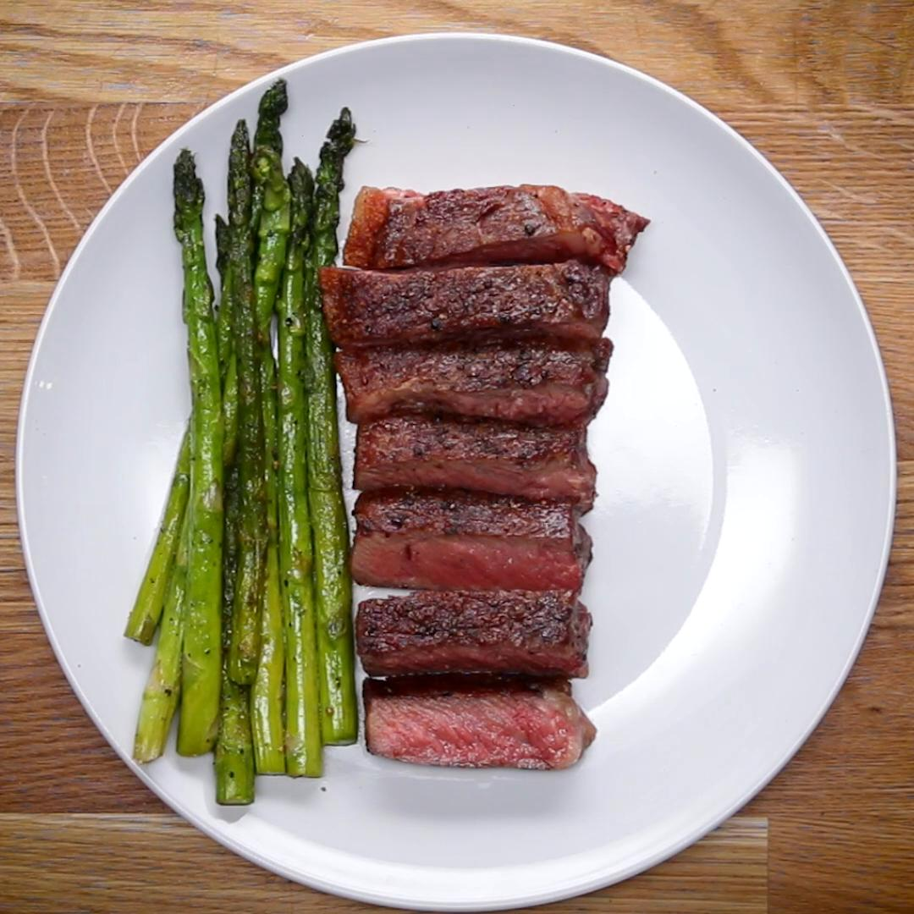

Steak with asparagus

Description
Juicy steak and crisp asparagus are a match made in heaven in this easy and delicious recipe.
With just a few simple ingredients, this dish is sure to become a family favorite
Ingredients
- 2 boneless strip steaks, or shell steaks, about 1-inch (2cm)thick
- salt, to taste
- pepper, to taste
- 3 tablespoons canola oil
- 1 bunch asparagus
Preparation
- Season the steaks on all sides with the salt and pepper.
- Heat oil in a pan or a skillet over high heat until smoking.
- Sear the steaks for about a minute to a minute and a half on each side, depending on the thickness of your steak for medium-rare.
If you would like your steak rarer or more well-done, cook your steak shorter or longer accordingly.
- In the same pan, cook the asparagus with salt and pepper until tender but still slightly crunchy. Remove from heat.
- After the steaks have rested for about 5 minutes, slice, then serve with the asparagus!
- Enjoy
Back to the main page